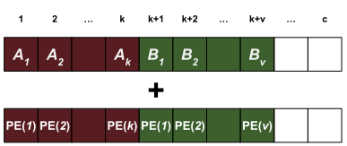
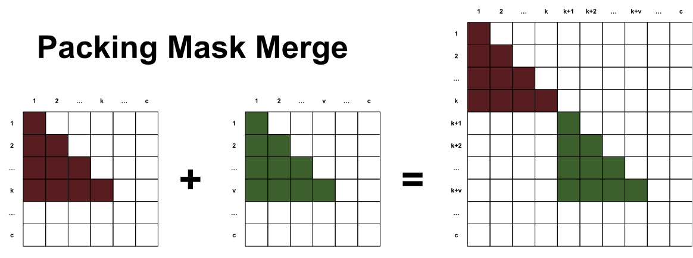

import numpy as np
from typing import List
def create_mask(sequence_lengths: List[int]) -> np.ndarray:
"""Create autoregressive mask. The input is assumed to be a single
sequence (list of size one) or a pack of sequences. The output is a
single autoregressive mask.
Args:
sequence_lengths: List of sequences lengths.
Returns:
Autoregressive masks.
"""
def create_autoregressive_mask(sequence_length: int) -> np.ndarray:
mask = np.triu(np.ones((sequence_length, sequence_length)), k=1)
return mask
sequence, offset = sum(sequence_lengths), 0
mask = np.ones((sequence, sequence), dtype=np.bool_)
for length in sequence_lengths:
mask[
offset:offset+length,
offset:offset+length,
] = create_autoregressive_mask(length)
offset += length
return maskWhen we add several sequences to a single batch sample, we are packing that sample. This is typically done to fill the context length of a sample and reduce the amount of padding. If we have a context length of \(c\) with two sequences \(A\) and \(B\) of lengths \(k\) and \(v\) respectively, the following figure depicts a packed sample.
In the Literature
Packing is briefly described in most papers (in fact, most authors cite T5 for it), here are some from the literature:
| Paper | Quote |
|---|---|
| RoBERTa1 | “Each input is packed with full sentences sampled contiguously from one or more documents, such that the total length is at most 512 tokens.” |
| GPT-32 | “During training we always train on sequences of the full nctx = 2048 token context window, packing multiple documents into a single sequence when documents are shorter than 2048, in order to increase computational efficiency.” |
| T53 | “Whenever possible, we “pack” multiple sequences into each entry of the batch so that our batches contain roughly 216 = 65,536 tokens.” |
| T04 | “we use packing to combine multiple training examples into a single sequence to reach the maximum sequence length.” |
Potential Issues
Imagine we are using an autoregressive transformer decoder to predict token \(B_1\) given a completely unrelated randomly sampled sentence \(A\). We are essentially predicting randomness. This is called cross-contamination - this should hurt the loss since whatever we predict would be somewhat nonsensical. To counter the effect of cross-contamination, the GPT-3 authors chose to simply add an end-of-document token embedding between packed sequences which seems to work fine.
Masked Language Modeling approaches like RoBERTa have different issues when it comes to cross-contamination. Sequences are sampled from documents and differentiated by the end-of-document, but it appears that sampling sequences from different documents hurts the loss when compared to sequences from the same document. Sampling from the same document is often times difficult or impossible, so the authors take the loss.
Packing and Masking
As mentioned, we can simply add the end-of-document token to differentiate sequences packed, but there is a better alternative that involves masking. Discussed in more detail in Krell et al.5, we can sum it up in two points.
1. Change in Positional Encoding
Positional encodings/embeddings should be adjusted to account for packed sequences. the extra sequences that are packed should start at an appropriate positional embedding, not just following the previous sequences. If we have a positional encoder based on the token index \(\text{PE}(i)\), the following figure shows how to reset the index:

2. Change in Self-Attention Mask
Masking in self-attention needs to ensure that one sequence cannot attend to another sequence. We need to merge autoregressive masks for the self-attention layer. Some example code:
In short: repeatedly pack sequences and merge their respective autoregressive masks until we hit the context length. A merge operation of two masks can be seen below:

With additive-masked attention, everything in the white region should be set to negative infinity to ensure that they will not be used during softmax. If properly implemented, you might notice that it makes no difference if we have \(n\) sequences or \(l \leq n\) packed sequences sourced from the \(n\) - the gradient step should6 be equal. It’s worth your time looking at figures 3 and 4 in the paper, they explain the performance of packing and the effect of ‘proper’ masking.
6 In practice, however, …
It’s not a complete free lunch though. We can normally save a single triangular matrix for self attention that is pre-computed, but now we will need an individual mask per sample. Typical flash attention implementations won’t even register a mask but will just perform masking based on the sequence index.
Closing Thoughts
Packing increases the effective batch size, allowing us to forward more samples (= more throughput!) through the model and converge quicker. To maximize the performance when using packing:
- Mask correctly for positional encoding
- Mask correctly for self-attention
In practice we see both the ‘masked’ packing and packing using the end-of-document approaches. In theory the end-of-document token can communicate itself to all other tokens in the residual stream.
It’s interesting to see that GPT-3 did not use masked packing. Perhaps the loss increase by not masking properly is not as bad or completely absent in large scale training? It is also possible that GPT4 is trained using masked packing. Does Gemini/PaLM use masked packing? If they use t5x it seems so7, but they still use the end-of-document token8:
7 They call it segmented data - from the T5x codebase.
8 Page 10 of the PaLM paper.
A sequence length of 2048 was used for all models. Input examples are concatenated together and then split into sequences of exactly 2048 tokens, so that there are no padding tokens, but examples may be split in the middle. Input examples are differentiated from one another with a special [eod] token.
A large part of packing seems to be that it is this poorly documented practice that top companies probably have a tremendous amount of in-house knowledge about.
For an offical implementation that packs sequences see the TensorFlow tensor2tensor library9. It seems that Huggingface does not support packing10 - weird!